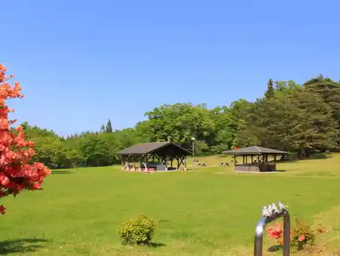
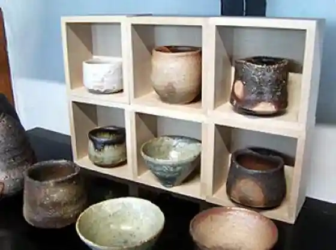

Tamagawa Yaeijo
Nodamura, Iwate · 0194-78-2963 · Official / source link

no Da Kama
Nodamura, Iwate · 0194-78-3403 · Official / source link

Nodamura Hotate
Nodamura, Iwate · 0194-78-2171 · Official / source link

Tennen Shio Tsukuri Experience
Nodamura, Iwate · 0194-78-2225 · Official / source link
Marusa O Sakana Center
Nodamura, Iwate · 0194-78-3333 · Official / source link
Tomaya
Nodamura, Iwate · 0194-78-2926 · Official / source link
Ryo Umi no Oka Wainarii
Nodamura, Iwate · 0194-75-3980 · Official / source link
Kibori no Sakana Art Museum Sakana no Banya
Nodamura, Iwate · 0194-66-8866 · Official / source link
Roadside Station (no Da)
Nodamura, Iwate · 0194-78-4171 · Official / source link
Kazusa Ra Hi Yama
Nodamura, Iwate · 0194-78-2111 · Official / source link
Marinrozu Park Nodamura Tamagawa Chika Museum
Nodamura, Iwate · 0194-66-7200 · Official / source link
Ajia Minzoku Zokei Kan
Nodamura, Iwate · 0194-78-3252 · Official / source link
no Da Kama Gyararii IZUMITA
Nodamura, Iwate · 0194-78-3403 · Official / source link
Daito no Kura
Nodamura, Iwate · 0194-78-2012 · Official / source link
Eboshi Iwa
Nodamura, Iwate · 0194-78-2012 · Official / source link
Marinrozu
Nodamura, Iwate · 0194-66-7200 · Official / source link
Akka Kawa
Nodamura, Iwate · 0194-78-2111 · Official / source link